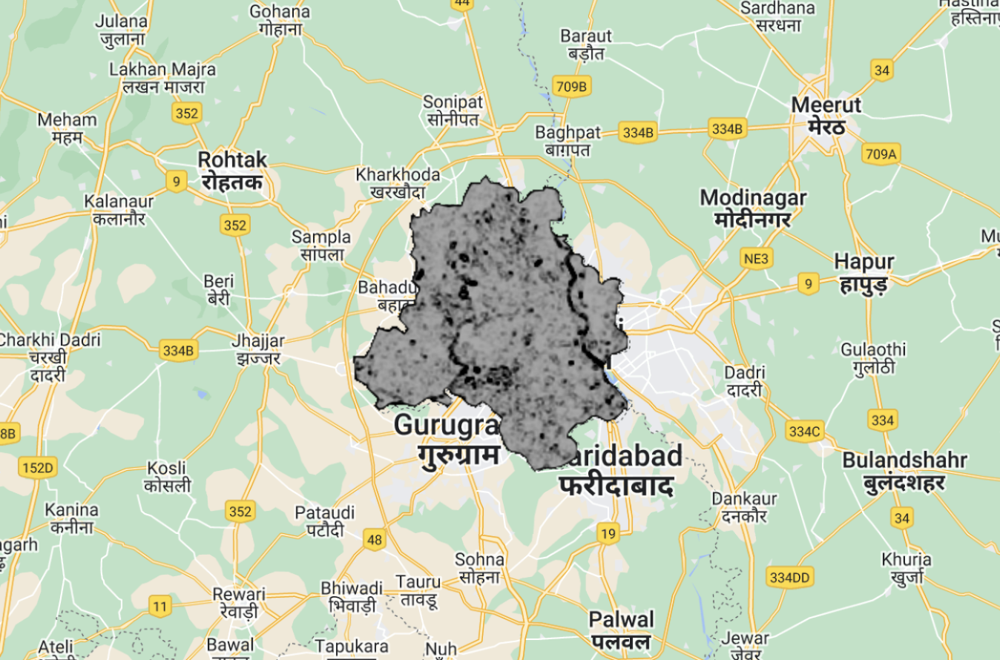

5 Week06
1. Content Summary: Google Earth Engine (GEE)
1.1 What is GEE ?
Based on JavaScript, Google proposed Google Earth Engine(GEE) in 2010 as a cloud-based platform for processing geospatial datasets and developing applications(Amani et al.,2020). GEE provides diverse functions for 5 objects, namely vector, raster, feature, string and number.
1.2 Why Need to Use GEE ?
The application GEE is popular since it can provide more possibilities to users, and the following will introduce its advantages based on the study of Amani et al.(2020), Corelick et al.(2017), and Ollie’s lecture.
- Cloud-based Infrastructure
- A free cloud-based service.
- Timesaving: The characteristic of automatic parallel processing and fast computational platform can reduce the time-consuming for analysing big datasets.
- Fast Visualisation: GEE stores and processes RS data by using a pyramid concept at different pixel resolutions, which can effectively and rapidly visualise RS processed imagery.
- Dataset
- Data Availability: GEE includes a large repository of publicly available geospatial datasets, including Landsat-8, Sentinel-2, Sentinel-3, and so on.
- Capability of uploading data by users.
- Automatically convert data into Mercator projection (EPSG: 3857).
- Powerful Datasets: It also has some datasets that have been preprocessed or corrected and derivative products (e.g.NDVI, Landsat 4–8 surface reflectance, and UMD global forest change).
- Function
- Diverse Analysis Methods: GEE library provides diverse functions and algorithms for analysing datasets, including simple mathematical functions. geostatistics, machine learning (supervised and unsupervised), and image processing operations.
- Application Programming Interface (API)
- Combined with a powerful web-based programming interface.
- RS data can be accessed through the JavaScript and Python API.
1.3 How to Use GEE ?
In terms of practical, I applied RS imagery of Delhi, India collected by Landsat 8 Satellite to discuss the application of the GEE platform.
- Preprocessing
I filtered the Landsat 8 dataset based on dates, cloud cover, and vector boundary data. Secondly, the true colour image was visualised by parameters( B4, B3, B2). Following this, the mean of all overlapping pixels was calculated to merge the three images and reduce the impact of extreme values in the image on the statistical results (Dimensionality Reduction). Finally, the image data was clipped using the vector boundary data, as illustrated in Figure 1.

- Analysing
After Preprocessing, the image data is analysed. Figure 2 presents the result of the grey-level co-occurrence matrix (GLCM) texture displayed by surface reflectance (SR). It seems that the airport area in the southeastern region shows a high SR. In addition,the Normalised Difference Vegetation Index (NDVI) is calculated and visualised using the GEE platform (Figure 3).
Furthermore, GEE also can conduct Principal Component Analysis (PCA), and Figure 4 demonstrates the first component of PCA. Despite the code of the PCA function being complex, it is undeniable that in comparison to SANP, GEE processes images very quickly and does not require local memory.

2. Application
GEE provides an opportunity for large-scale geospatial analysis, and has found extensive application. A study examining 450 GEE articles by Amani et al.(2020) summarised the primary scope of GEE applications (Figure 5), indicating that the GEE platform is mainly utilised in the fields of vegetation, agriculture, and hydrology category.
In terms of dataset application, Tamiminia et al. (2020) demonstrated, in a systematic review of 348 GEE articles, that 90% of GEE research adopted remote sensing datasets and conducted a series of Machine Learning, including classification, regression, and other methods (e.g. feature extraction) (Figure 6). The findings also revealed that Landsat (especially Landsat 8) and MODIS, as optical imagery with medium spatial resolution, were most popular in GEE studies. Taking the study of Xie et al. (2019) as an example, the time-series Landsat dataset was adopted on the GEE platform to monitor vegetation dynamics by calculating indices, and the GEE application significantly reduced the time and effort spent on data access, processing, and its storage cost. Xie et al.(2019) further mentioned that GEE can contribute to the efficient collaboration and sharing of scripts, allowing scholars to apply codes and access results easily and freely. Additionally, Tamiminia et al. (2020) also revealed that 10% of GEE studies analysed ready-to-use products, mainly focusing on vegetation indices, land cover, Hansen global forest change, and Digital Elevation Models (DEMs). For instance, to capture cropland mapping of Africa, Xiong et al. (2017) applied the 16-day time series of Moderate Resolution Imaging Spectroradiometer (MODIS) NDVI composited data at 250-m resolution to develop the algorithm on the GEE platform.

3. Reflection
This is my first experience using GEE. It is undeniable that its usability is very powerful. Compared with SNAP and R studio, it provides a variety of online data sources and saves a lot of time in image processing. Although I have no experience with Javascript, I can learn and apply code through the function library it provides. I guess this is why I need to learn GEE!
Nevertheless, I also recognise that GEE has some limitations in its application. GEE is a web-based platform, which requires me to use it under a constant Internet connection. This might pose challenges for users in areas with poor or no internet access. Besides, Amani et al. (2020) summarised some limitations of GEE, including incomplete support for algorithms (e.g., unavailability of deep learning algorithms) and the need for improvement in efficiency and accuracy of image segmentation algorithms for classification.
Hence, in GEE for image processing, I should experiment with and delve into multiple algorithms. By gaining a comprehensive understanding of the differences among these algorithms, I can strategically choose the most fitting one for computation. This exploration might serve as a potential direction for my future learning and development.
4. Reference
Amani, M., Ghorbanian, A., Ahmadi, S. A., Kakooei, M., Moghimi, A., Mirmazloumi, S. M., Moghaddam, S. H. A., Mahdavi, S., Ghahremanloo, M., Parsian, S., Wu, Q. and Brisco, B. (2020). ‘Google Earth Engine Cloud Computing Platform for Remote Sensing Big Data Applications: A Comprehensive Review’. IEEE Journal of Selected Topics in Applied Earth Observations and Remote Sensing, 13, pp. 5326–5350. doi: 10.1109/JSTARS.2020.3021052.
Gorelick, N., Hancher, M., Dixon, M., Ilyushchenko, S., Thau, D. and Moore, R. (2017). ‘Google Earth Engine: Planetary-scale geospatial analysis for everyone’. Remote Sensing of Environment, 202, pp. 18–27. doi: 10.1016/j.rse.2017.06.031.
Tamiminia, H., Salehi, B., Mahdianpari, M., Quackenbush, L., Adeli, S. and Brisco, B. (2020). ‘Google Earth Engine for geo-big data applications: A meta-analysis and systematic review’. ISPRS Journal of Photogrammetry and Remote Sensing, 164, pp. 152–170. doi: 10.1016/j.isprsjprs.2020.04.001.
Xie, Z., Phinn, S. R., Game, E. T., Pannell, D. J., Hobbs, R. J., Briggs, P. R. and McDonald-Madden, E. (2019). ‘Using Landsat observations (1988–2017) and Google Earth Engine to detect vegetation cover changes in rangelands - A first step towards identifying degraded lands for conservation’. Remote Sensing of Environment, 232, p. 111317. doi: 10.1016/j.rse.2019.111317.
Xiong, J., Thenkabail, P. S., Gumma, M. K., Teluguntla, P., Poehnelt, J., Congalton, R. G., Yadav, K. and Thau, D. (2017). ‘Automated cropland mapping of continental Africa using Google Earth Engine cloud computing’. ISPRS Journal of Photogrammetry and Remote Sensing, 126, pp. 225–244. doi: 10.1016/j.isprsjprs.2017.01.019.